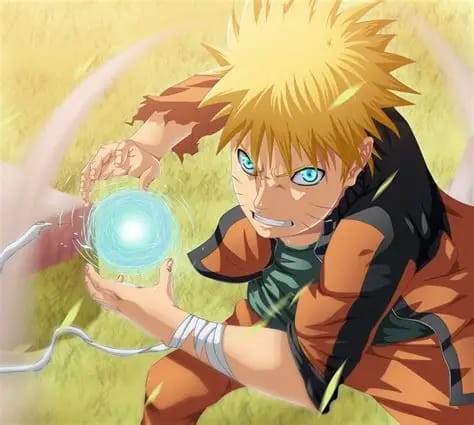
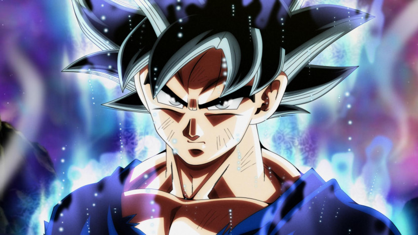
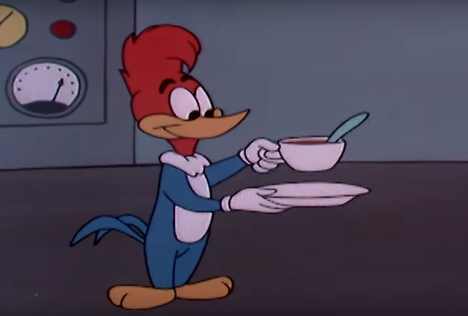

Naruto Uzumaki
Naruto Uzumaki é um ninja persistente da Vila da Folha que cresceu sozinho e rejeitado, mas nunca desistiu de seus sonhos. Com seu jeito alegre e barulhento, ele treina incansavelmente para proteger seus amigos e alcançar o cargo de Hokage, o líder máximo de sua vila, provando para todos que o esforço pode superar qualquer destino difícil.
Avatar Aang
Aang é o protagonista de "Avatar: A Lenda de Aang", um garoto de espírito livre e pacífico que pertence aos Nômades do Ar. Como o Avatar, ele é o único capaz de dominar os quatro elementos (Ar, Água, Terra e Fogo) e tem a missão de restaurar o equilíbrio em um mundo devastado por cem anos de guerra. Apesar de carregar o peso de salvar a humanidade, Aang mantém sua essência gentil e brincalhona, sempre buscando resolver conflitos sem violência sempre que possível.

Garfield
Garfield é um gato laranja sarcástico, preguiçoso e apaixonado por comida, especialmente lasanha. Criado por Jim Davis, ele vive com seu dono, Jon Arbuckle, e o cãozinho Odie, passando a maior parte do tempo dormindo ou reclamando das segundas-feiras. Com um humor ácido e um certo desdém por exercícios físicos, ele é o retrato perfeito de quem prefere o conforto do sofá a qualquer tipo de esforço ou dieta.

Kakaroto (Goku)
Goku é o protagonista da franquia Dragon Ball e um dos guerreiros mais poderosos do universo. Pertencente à raça alienígena Sayajin, ele foi enviado à Terra ainda bebê e cresceu com um espírito puro, alegre e uma paixão insaciável por artes marciais. Sempre em busca de adversários fortes para testar seus limites, Goku é conhecido por sua determinação inabalável, seu apetite gigante e sua capacidade de superar qualquer obstáculo através do treinamento duro, protegendo a Terra e seus amigos de ameaças intergalácticas.

Homem-Aranha
O Homem-Aranha é o alter ego de Peter Parker, um jovem inteligente que ganha poderes incríveis, como força sobre-humana e a habilidade de escalar paredes, após ser picado por uma aranha radioativa. Agindo como o "amigo da vizinhança" em Nova York, ele equilibra as dificuldades da vida comum com a responsabilidade de combater o crime. Sua jornada é guiada pelo lema inesquecível de que "com grandes poderes vêm grandes responsabilidades", tornando-o um dos heróis mais humanos e queridos da cultura pop.

Jon Snow (Aegon Targaryen)
Jon Snow é um dos personagens centrais de Game of Thrones, conhecido por sua honra inabalável e por viver como o filho bastardo de Ned Stark. Criado em Winterfell, ele se junta à Patrulha da Noite para proteger a Muralha, onde evolui de um jovem deslocado a um líder resiliente e corajoso. Envolto em mistérios sobre sua verdadeira origem, Jon enfrenta ameaças sobrenaturais e dilemas políticos, mantendo-se fiel aos seus princípios mesmo quando precisa fazer sacrifícios difíceis pelo bem maior.

Lord Voldemort
Lord Voldemort, cujo nome verdadeiro é Tom Riddle, é o vilão principal da saga Harry Potter e um dos bruxos das trevas mais temidos de todos os tempos. Obcecado pela pureza de sangue e pela imortalidade, ele dividiu sua alma em Horcruxes para tentar enganar a morte e governar o mundo bruxo através do medo. Conhecido como "Aquele-Que-Não-Deve-Ser-Nomeado", ele é uma figura fria e cruel que lidera os Comensais da Morte, sendo o nêmesis de Harry Potter, o único que sobreviveu ao seu ataque e que representa a profecia de sua queda.

Pica-Pau
O Pica-Pau é um dos personagens mais icônicos da animação, conhecido por sua personalidade caótica, travessa e extremamente audaciosa. Com sua risada inconfundível, ele vive se metendo em confusões e aplicando golpes em seus adversários, agindo muitas vezes como um anti-herói que prioriza a diversão e a própria sobrevivência. Seja pregando peças em vizinhos ou fugindo de situações absurdas, ele é o símbolo máximo da esperteza e do bom humor debochado, sempre quebrando as regras da lógica para se dar bem no final.